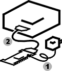

|
[Expand all]
[Collapse all]
XESS Board Setup
Setup for XSA, XS40 and XS95 Boards
|
Attach Cables |
Test Board |
Get Result |
|

- Attach a power
adapter to the power jack of
your board.
- Attach the download cable from the PC
parallel port to your board.
|
- Double-click the GXSTEST icon.
- Select the type of your XESS board.
- Select the parallel port number (usually
LPT1).
- Click the TEST button.
- Testing will take less than a minute.
|
Good!
Your board passed the test. It is ready
for use as a logic circuit prototyping station.
Uh-Oh!
Your board failed the test. Try the
following:
- Check the list of common problems displayed
by GXSTEST.
- Remove the cables, then reconnect and
re-run GXSTEST.
- Look in the
README.TXT file.
- Request help at
www.xess.com/help.php3.
|
Setup for XSB and XSV Boards
|
Attach Cables |
Test Board |
Get Result |
|
- Attach an ATX power supply to the power
connector of
your board.
- Attach the download cable from the PC
parallel port to your board.
|
- Double-click the GXSTEST icon.
- Select the type of your XESS board.
- Select the parallel port number (usually
LPT1).
- Click the TEST button.
- Testing will take less than a minute.
|
Good!
Your board passed the test. It is ready
for use as a logic circuit prototyping station.
Uh-Oh!
Your board failed the test. Try the
following:
- Check the list of common problems displayed
by GXSTEST.
- Remove the cables, then reconnect and
re-run GXSTEST.
- Look in the
README.TXT file.
- Request help at
www.xess.com/help.php3.
|
Installing Additional Software
The ISE DVD contains several FPGA design-related software packages
from Xilinx. (If you don't have the DVD, you can download
all the Xilinx software from
www.xilinx.com.)
WebPACK provides a complete FPGA design environment
for all the devices found on our XSA, XSB, XSV and XS95 Boards.
If you don't already have any Xilinx FPGA design software on your PC, then you
should install WebPACK.
Foundation has some advanced features not found in
WebPACK, but is otherwise identical. But it is an
evaluation version that expires in 60 days, so you may not want
to grow accustomed to its added capabilities.
ChipScope allows you to examine logic signals inside
the FPGA while it is running, but it is not necessary to install
this tool immediately. This software can be installed
after you gain some experience with FPGA design.
For XS40 Board Owners Only
WebPACK and Foundation do not support the XC4000-series FPGAs
on the older XS40 Boards. Your only no-cost design software
for these older FPGAs is to download the
ISE Classic tools. These tools only do the back-end
place & route function that maps a netlist into the FPGA
circuitry and generates the configuration bitstream. You will
need to supply the front-end design-entry tool that generates
the netlist that describes your design. You will have to find a
free VHDL or Verilog synthesizer, but then you have to figure
out how to interface that to the Xilinx place & route tools.
In summary, this is not recommended for beginners.
Guide to Documentation
README.TXT
The README.TXT file contains very important information that
may help you if you have difficulties getting your board or FPGA
designs to work. There is also a link to this file in the
XSTOOLs start menu.
Manuals
The most-recent manuals for all the XESS boards and
software are stored in the C:\Program Files\XSTOOLs\Manuals
folder (if you elected to install this documentation during
the XSTOOLs setup). You will need the Adobe Acrobat
Reader to view these files. There is also a link to this
folder in the XSTOOLs start menu.
You can also find all XESS product manuals
online or on
your local copy of the XESS website (if you installed it
during the XSTOOLs setup).
Tutorials
There are several tutorials available to help you learn how
to use the XESS boards with the Xilinx FPGA design software:
XSA Board:
Here is a tutorial that shows how to
build an LED display and a counter and combine them into a
hierarchical design using WebPACK. The example designs
run on all the XSA Boards.
XSB Board:
Here is a tutorial that is similar to
the XSA Board tutorial, except that it is geared toward the
XSB Board.
XS40 and XS95 Boards:
The Pragmatic Logic Design
online text demonstrates a range of designs that employ
features of the FPGAs and CPLDs on the XS40 and XS95 Boards.
XSV Board: There is no tutorial for the XSV Board.
Sorry. You might want to check
this series of design examples created by the University
of Queensland for the XSV Board.
Design Examples
You can find many design examples for the various XESS
boards online
or on your local copy of the XESS website (if you installed it
during the XSTOOLs setup).
In addition, some designs for the XSA and XSB Boards are
stored in the C:\Program Files\XSTOOLs\Examples folder (if you
installed these during the XSTOOLs setup).
Frequently Asked Questions
We maintain an
online FAQ
with questions and answers from our customers. This FAQ
is also in your local copy of the XESS website (if you
installed it during the XSTOOLs setup).
Search
You can perform simple searches across the entire XESS
website by typing keywords into the search box at the top of
each page. More sophisticated searches can be done on
the
search page.
Warranty
|